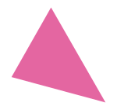

5-6 October 2017
Met Office  Exeter  United Kingdom
United Kingdom
Graphical Web is an annual, global conference that showcases the many new open source technologies available for presenting visual information on the web.
The conference showcases best practice, new opportunities and future directions in the fast-changing world of web graphics and will appeal to a variety of professionals throughout the technology, data visualisation and graphics industries.